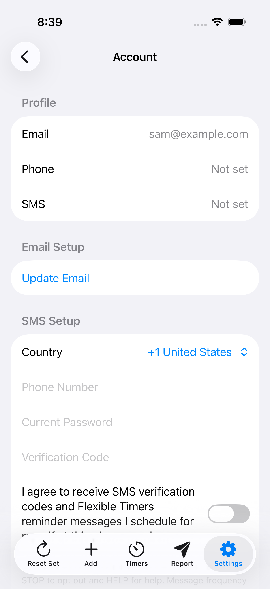

Bewijs van SMS-toestemming van Flexible Timers by Xintech LLC
Deze vertaling is bedoeld voor het gemak. De Engelse versie is de gezaghebbende versie. English.
Deze pagina documenteert de SMS-aanmeldingsstroom van Flexible Timers voor Twilio-verificatie van een gratis nummer. Flexible Timers wordt beheerd door Xintech LLC. De bedrijfsnaam die aan gebruikers wordt getoond is Flexible Timers by Xintech LLC. Flexible Timers SMS is beperkt tot verificatiecodes voor het accounttelefoonnummer en door de gebruiker gemaakte timer- of herinnerings-SMS die alleen worden verzonden naar het eigen geverifieerde en aangemelde accounttelefoonnummer van de aangemelde gebruiker. Flexible Timers laat gebruikers geen berichten sturen naar willekeurige derden, verzendt geen marketing-sms'jes en biedt geen tweerichtings-SMS-chat.
Aanmeldingsstroom
- Gebruiker meldt zich aan bij Flexible Timers.
- Gebruiker opent Accountinfo.
- De gebruiker opent SMS instellen.
- Gebruiker voert zijn eigen telefoonnummer in.
- Het selectievakje SMS-toestemming is niet vooraf geselecteerd.
- Gebruiker vinkt bevestigend het selectievakje SMS-toestemming aan.
- De gebruiker kan de links naar de SMS-voorwaarden en het privacybeleid vanuit hetzelfde scherm openen.
- De gebruiker klikt op Doorgaan om een eenmalige verificatiecode aan te vragen.
- Nadat de telefoon is geverifieerd en aangemeld, kan de gebruiker SMS-herinneringen plannen alleen naar datzelfde geverifieerde en aangemelde accounttelefoonnummer.
Toestemmingstekst
Ik ga akkoord met het ontvangen van SMS-verificatiecodes en herinneringsberichten van Flexible Timers by Xintech LLC die ik voor mezelf plan op dit telefoonnummer. Er kunnen standaardtarieven voor berichten en data van toepassing zijn. Antwoord STOP om u af te melden en HELP voor hulp. De berichtfrequentie varieert. Flexible Timers verzendt geen marketing-sms'jes. Toestemming is geen aankoopvoorwaarde.
Schermafbeelding
Het aanmeldingsscherm toont het telefoonnummerveld, een niet-aangevinkt toestemmingsvakje, toestemmingstekst met de naam Flexible Timers by Xintech LLC, een link naar de SMS-voorwaarden, een link naar het privacybeleid, STOP/HELP-tekst, informatie over de berichtfrequentie, informatie over bericht-/datatarieven en het SMS-bereik dat beperkt is tot de telefoon van de accounteigenaar.

Voorbeeldproductieberichten
Flexible Timers verificatiecode: 123456. Deze code vervalt over 10 minuten. Antwoord STOP om u af te melden, HELP voor hulp.
Flexible Timers-herinnering: je hebt deze SMS-herinnering gepland voor 16:00 uur: Haal het kind op voor de pianoles na schooltijd. Antwoord STOP om u af te melden, HELP voor hulp.
Zoekwoordreacties
Inkomende trefwoorden worden alleen gebruikt voor naleving en voor berichtinstellingen voor het accounttelefoonnummer. Flexible Timers accepteert geen algemene SMS-gesprekken.
STOP-reactie: U bent afgemeld voor Flexible Timers SMS. Er worden geen berichten meer verzonden. Antwoord START om u opnieuw aan te melden.
HELP-antwoord: Flexible Timers verzendt accountverificatiecodes en SMS-herinneringen die u voor uzelf plant. Hulp: https://xintechllc.com/FlexibleTimers/support.html. Antwoord STOP om u af te melden.
START-reactie: u heeft zich opnieuw aangemeld voor Flexible Timers SMS-berichten. De berichtfrequentie varieert. Antwoord STOP om u af te melden, HELP voor hulp.
Ondersteuning en beleid
Laatst bijgewerkt: 15 juni 2026.